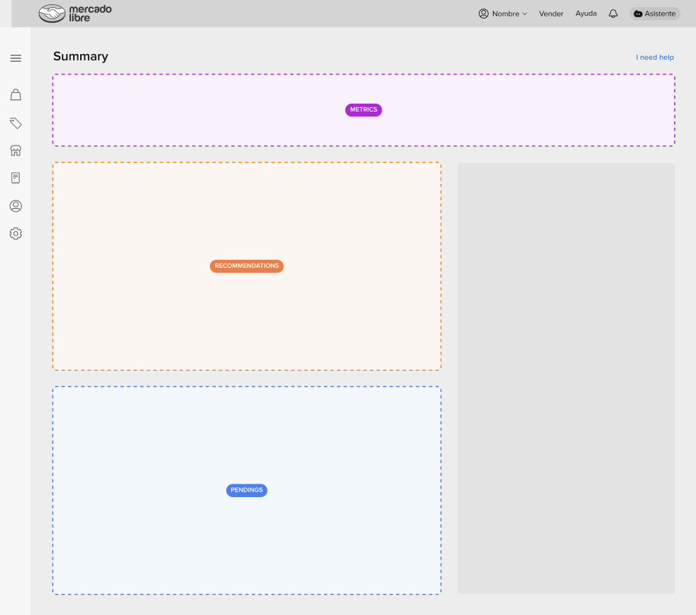
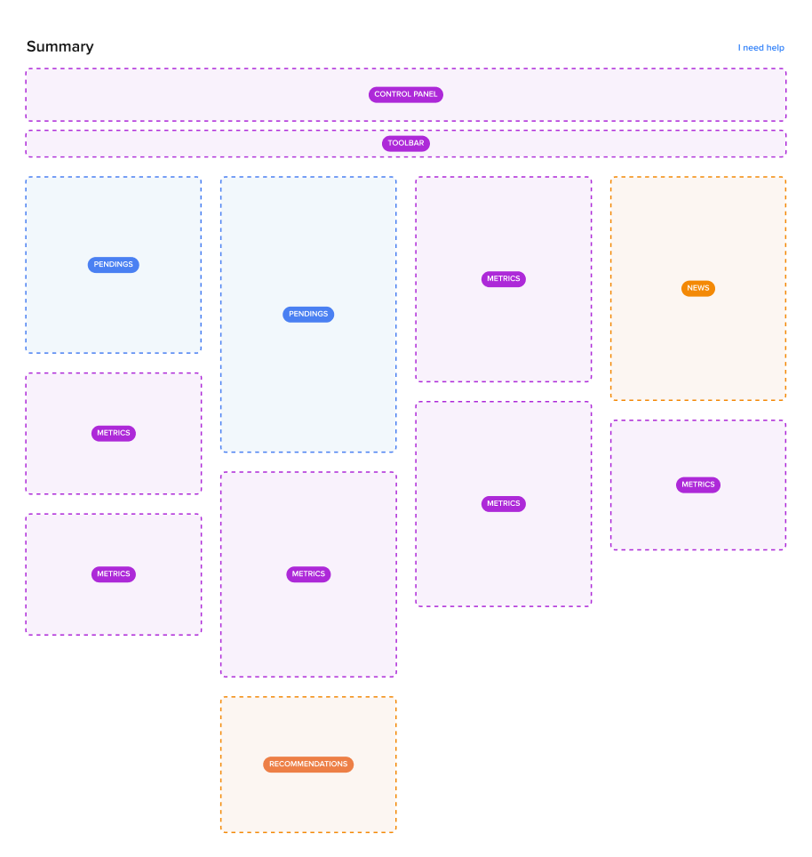
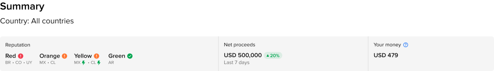
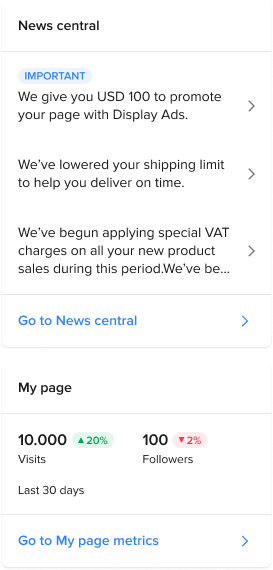
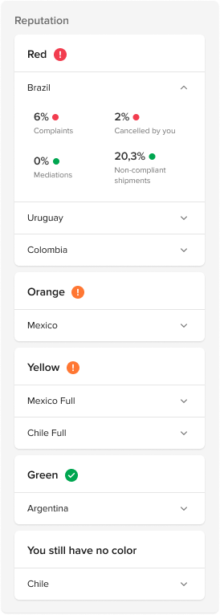
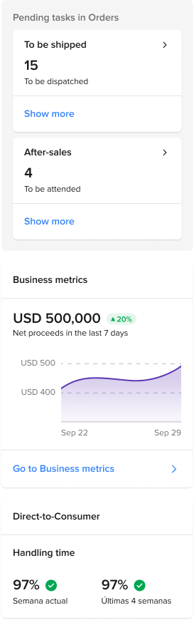
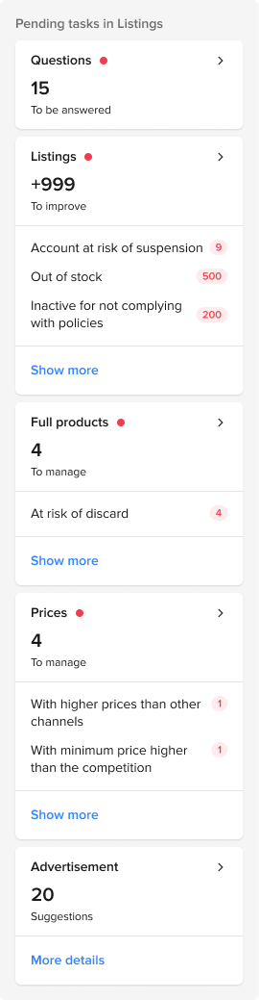

01 Mercado Libre · Summary in Global Selling
Make the important
easier to find.
Reshaping a crowded seller dashboard into a more relevant, flexible Summary experience.
- Focus
- Information architecture
Content strategy · UX design - Audience
- Global Selling merchants
Colombia, Brazil and other markets - My contribution
- Research synthesis, prioritisation,
experience design and testing
A useful page had become hard to use.
The Summary section was meant to raise awareness of key projects and seller information. As its scope grew, the page accumulated more content without clear prioritisation. Sellers faced information overload and struggled to tell what was relevant or valuable.
The opportunity was to make the information easier to scan and find, while allowing the experience to respond to different seller needs and market contexts.
Start with relevance, then make the structure flexible.
I used research-team insights and an in-depth review of the existing experience to rethink how information was organised. The proposal prioritised the content sellers needed most, introduced clearer categories and ways to find information, and made room for different content types and contexts.
Rather than treating the Summary as one fixed collection of cards, the design direction gave teams a clearer framework for deciding what earns a place on the page.


Bring evidence, content and product decisions together.
- Reviewed research insights and usage information to understand seller needs.
- Defined a prioritisation approach for the information shown to sellers.
- Reshaped the information architecture and explored a more adaptable layout.
- Worked with product, research, content and engineering partners; usability testing informed iteration.
A closer look at the system.
A closer look at the Summary dashboard and its component patterns.

Dashboard modules




Good information architecture is a service to the person looking for an answer. Clear priorities make a complex product feel more manageable.
Figures to be added
Did the redesign make Summary easier to reach?
Click data is still to be confirmed. The comparison below is ready for the verified figures.
Clicks to Summary
Verified figure to be addedClicks to Summary
Verified figure to be added